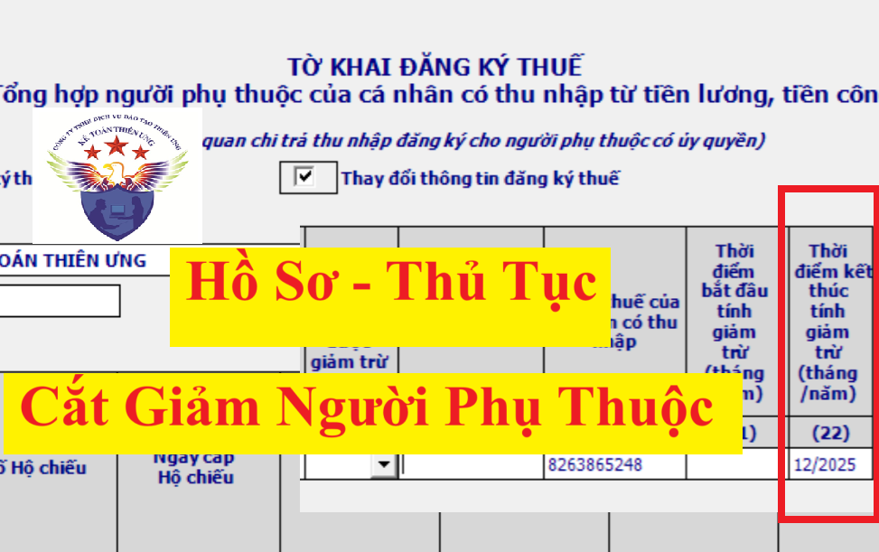
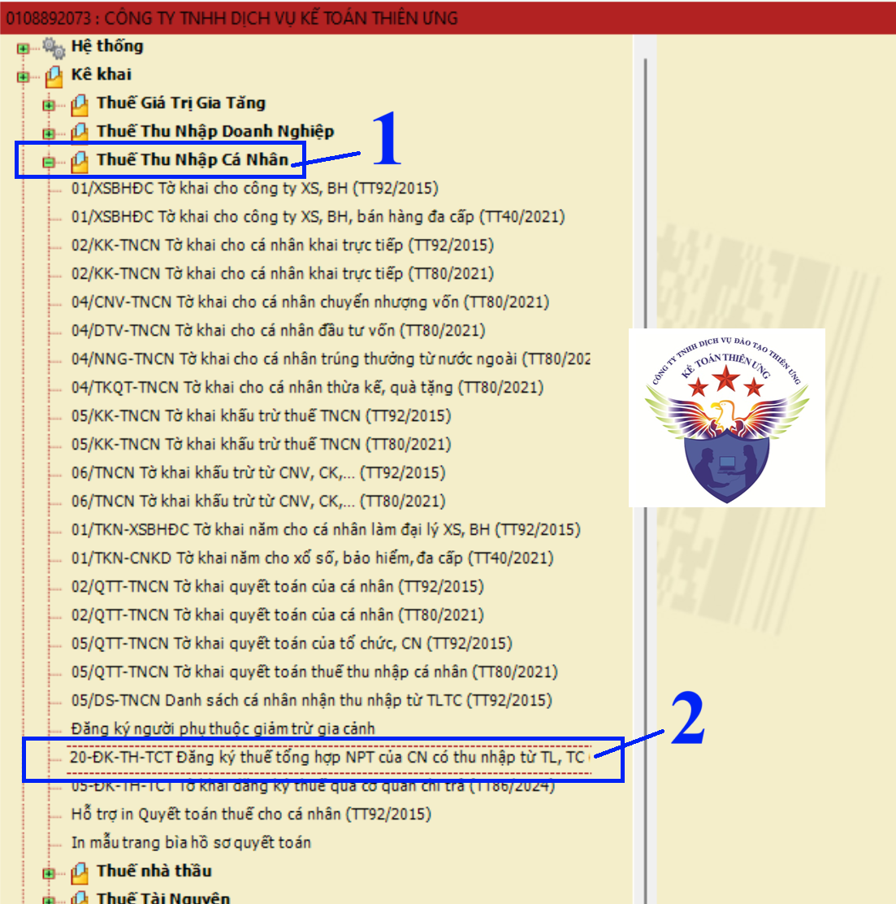
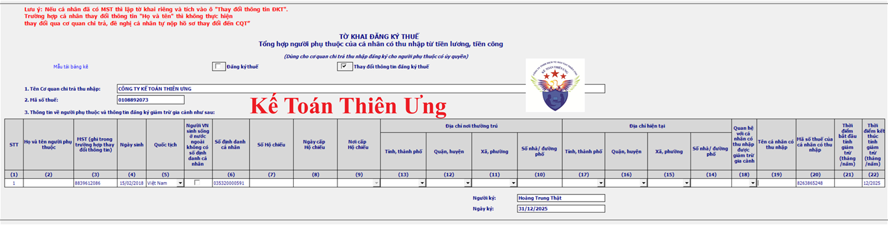

Hướng dẫn thủ cắt giảm người phụ thuộc 2025 trên phần mềm HTKK để nộp qua mạng
Khi nào thì thực hiện cắt giảm người phụ thuộc?

Một vài các trường hợp cần thực hiện thủ tục cắt giảm người phụ thuộc như:
+ Chuyển người phụ thuộc (Ví dụ như chuyển người phụ thuộc là con từ chồng sang vợ hoặc ngược lại)
+ Người phụ thuộc không còn đủ điều kiện là NPT nữa (Ví dụ như: Trước đây đã đăng ký NPT là con nhưng bây giờ Con đã từ 18 tuổi trở lên có thu nhập bình quân tháng trong năm từ tất cả các nguồn thu nhập vượt quá 1.000.000 đồng ...)
+ Chuyển người phụ thuộc (Ví dụ như chuyển người phụ thuộc là con từ chồng sang vợ hoặc ngược lại)
+ Người phụ thuộc không còn đủ điều kiện là NPT nữa (Ví dụ như: Trước đây đã đăng ký NPT là con nhưng bây giờ Con đã từ 18 tuổi trở lên có thu nhập bình quân tháng trong năm từ tất cả các nguồn thu nhập vượt quá 1.000.000 đồng ...)
Chuyển nơi làm có phải cắt giảm người phụ thuộc không?
Theo quy định tại điểm i khoản 1 Điều 9 Thông tư 111/2013/TT-BTC thì:
i) Người nộp thuế chỉ phải đăng ký và nộp hồ sơ chứng minh cho mỗi một người phụ thuộc một lần trong suốt thời gian được tính giảm trừ gia cảnh. Trường hợp người nộp thuế thay đổi nơi làm việc, nơi kinh doanh thì thực hiện đăng ký và nộp hồ sơ chứng minh người phụ thuộc như trường hợp đăng ký người phụ thuộc lần đầu theo hướng dẫn tại tiết h.2.1.1.1, điểm h, khoản 1, Điều này.
Như vậy, trường hợp người lao động chuyển nơi làm việc thì nếu muốn được tính giảm trừ NPT tại công ty mới thì cần phải đăng ký người phụ thuộc tại công ty mới. Còn tại công ty cũ thì không phải báo giảm người phụ thuộc.
Còn đối với trường hợp: Trên tờ khai đăng ký NPT đã kê khai thông tin về "Thời điểm kết thúc tính giảm trừ" rồi (tức là đã kê khai/đã xác định thời điểm cắt giảm người phụ thuộc rồi) thì sau tháng/năm ghi trên "Thời điểm kết thúc tính giảm trừ" đó, người phụ thuộc sẽ tự động được cắt giảm (được kết thúc giảm trừ) => Trường hợp này không cần làm thủ tục cắt giảm
Cách làm tờ khai cắt giảm người phụ thuộc trên phần mềm HTKK để nộp qua mạng như sau:
Bước 1: Vào phần mềm HTKK lựa chọn tờ khai:

Đăng nhập vào phần mềm HTKK, Sau đó:
(1) Vào mục "Thuế Thu Nhập Cá Nhân"
(2) Bấm vào dòng tờ khai “20-ĐK-TH-TCT Đăng ký thuế tổng hợp NPT của CN có thu nhập từ TL, TC”
(2) Bấm vào dòng tờ khai “20-ĐK-TH-TCT Đăng ký thuế tổng hợp NPT của CN có thu nhập từ TL, TC”
=> Đây chính là tờ khai đăng ký NPT Mẫu số: 20-ĐK-TH-TCT theo Thông tư số 86/2024/TT-BTC
Lưu ý: Bắt đầu từ phiên bản phần mềm Hỗ trợ kê khai HTKK 5.2.8 phát hành ngày 13/02/2025 thì Tổng Cục Thuế mới nâng cấp mẫu biểu Tờ khai đăng ký thuế tổng hợp người phụ thuộc của cá nhân có thu nhập từ tiền lương, tiền công (20-ĐK-TH-TCT) theo thông tư 86/2024/TT-BTC
=> Nên nếu máy tính của bạn đang cài phần mềm HTKK phiên bản thấp hơn phiên bản 5.2.8 thì hãy thực hiện cập nhật, nâng cấp lên phiên bản mới nhất hiện nay để có mẫu tờ khai đăng ký NPT theo thông tư 86/2024/TT-BTC
Phần mềm HTTK tự động hiển thị theo ngày tháng trên máy tính => Phần mềm cho phép sửa lại ngày tháng năm (nếu muốn)
=> Chọn xong thông tin về kỳ tính thuế thì bấm vào “Đồng ý” để vào giao diện của tờ khai
Bước 3: Làm tờ khai thay đổi thông tin đăng ký thuế cho người phụ thuộc=> Chọn xong thông tin về kỳ tính thuế thì bấm vào “Đồng ý” để vào giao diện của tờ khai
Căn cứ vào giấy ủy quyền và các giấy tờ của cá nhân đã nộp cho doanh nghiệp để kê khai thông tin vào tờ khai đăng ký NPT
GIẤY ỦY QUYỀN ĐĂNG KÝ THUẾ
Tên tôi là: Nguyễn Văn Chung
Mã số thuế đã được cấp: 8263865248
Căn cứ Thông tư số 86/2024/TT-BTC ngày 23/12/2024 của Bộ Tài chính, nay tôi ủy quyền cho Công Ty Kế Toán Diệu Tâm, mã số thuế 0108892073 đăng ký thay đổi thông tin đăng ký thuế cho người phụ thuộc của tôi với các thông tin như sau:
Tôi hoàn toàn chịu trách nhiệm trước pháp luật về thông tin đăng ký thuế người phụ thuộc của tôi trên giấy ủy quyền này./.
Hà Nội, ngày 16 tháng 03 năm 2025
NGƯỜI ỦY QUYỀN
(Ký, ghi rõ họ tên)
Chung
Nguyễn Văn Chung
|
Để tải mẫu giấy ủy quyền này thì các bạn xem tại đây:
Mẫu giấy ủy quyền đăng ký thuế số 41/UQ-ĐKT theo Thông Tư 86

Các cột chỉ tiêu cần kê khai bao gồm:
1. Doanh nghiệp tích vào chỉ tiêu “Thay đổi thông tin đăng ký thuế” (tương ứng với hồ sơ ủy quyền của cá nhân là hồ sơ thay đổi thông tin đăng ký thuế)
2. Cột 3: Nhập mã số thuế của người phụ thuộc
3. Cột 4: Nhập ngày tháng năm sinh của người phụ thuộc
4. Cột 5: Nhập quốc tịch của người phụ thuộc
6. Cột 20: Nhập mã số thuế thu nhập cá nhân của người lao động (cá nhân ủy quyền cắt giảm NPT)
7. Cột 22: Nhập tháng/năm kết thúc giảm trừ gia cảnh (căn cứ vào giấy ủy quyền để nhập thông tin này)
Lưu ý: Ví dụ nếu chỉ tiêu 22 - Thời điểm kết thúc tính giảm trừ (tháng/năm) kê khai là: 12/2025
Thì sẽ hiểu là: Tính giảm trừ hết tháng 12/2025, Từ tháng 01/2026 không tính giảm trừ nữa
Thì sẽ hiểu là: Tính giảm trừ hết tháng 12/2025, Từ tháng 01/2026 không tính giảm trừ nữa
Bước 4: Kết xuất tờ khai 20-ĐK-TH-TCT dạng XML để nộp qua mạng
Bước 5: Nộp tờ khai 20-ĐK-TH-TCT đã kết xuất từ phần mềm HTKK tại bước 4 qua mạng
Cách nộp tờ khai cắt giảm người phụ thuộc qua mạng cũng tương tự như việc nộp tờ khai đăng ký người phụ thuộc qua mạng
Chi tiết các bạn xem tại đây nhé: Cách đăng ký người phụ thuộc 2025 trên HTKK
Chi tiết các bạn xem tại đây nhé: Cách đăng ký người phụ thuộc 2025 trên HTKK
Hồ sơ, thủ tục cắt giảm người phụ thuộc bao gồm những gì?
Theo quy định tại khoản 4, điều 25 của Thông tư 86/2024/TT-BTC quy định về đăng ký thuế thì:
4. Đối với cá nhân quy định tại điểm k, l, n khoản 2 Điều 4 Thông tư này khi có thay đổi thông tin đăng ký thuế của bản thân và người phụ thuộc (bao gồm cả trường hợp thay đổi cơ quan thuế quản lý trực tiếp) nộp hồ sơ cho cơ quan chi trả thu nhập hoặc Chi cục Thuế, Chi cục Thuế khu vực nơi cá nhân đăng ký thường trú hoặc tạm trú (trường hợp cá nhân không làm việc tại cơ quan chi trả thu nhập hoặc không ủy quyền cho cơ quan chi trả thu nhập) như sau:
a) Hồ sơ thay đổi thông tin đăng ký thuế đối với trường hợp nộp qua cơ quan chi trả thu nhập, gồm: Văn bản ủy quyền mẫu số 41/UQ-ĐKT ban hành kèm theo Thông tư này (đối với trường hợp chưa có văn bản ủy quyền cho cơ quan chi trả thu nhập trước đó). Trường hợp cá nhân hoặc người phụ thuộc thuộc trường hợp cơ quan thuế cấp mã số thuế theo quy định tại điểm a khoản 4 Điều 5 Thông tư này thì nộp kèm theo bản sao Hộ chiếu có thay đổi thông tin liên quan đến đăng ký thuế của cá nhân hoặc người phụ thuộc.
Cơ quan chi trả thu nhập có trách nhiệm tổng hợp thông tin thay đổi của cá nhân vào Tờ khai đăng ký thuế mẫu số 05-ĐK-TH-TCT, thông tin thay đổi của người phụ thuộc vào Tờ khai đăng ký thuế mẫu số 20-ĐK-TH-TCT ban hành kèm theo Thông tư này gửi cơ quan thuế quản lý trực tiếp cơ quan chi trả thu nhập.
b) Hồ sơ thay đổi thông tin đăng ký thuế đối với trường hợp nộp trực tiếp tại cơ quan thuế, gồm: Tờ khai điều chỉnh, bổ sung thông tin đăng ký thuế mẫu số 08-MST hoặc mẫu số 20-ĐK-TCT ban hành kèm theo Thông tư này. Trường hợp cá nhân hoặc người phụ thuộc thuộc trường hợp cơ quan thuế cấp mã số thuế theo quy định tại điểm a khoản 4 Điều 5 Thông tư này thì nộp kèm theo bản sao Hộ chiếu còn hiệu lực của cá nhân hoặc người phụ thuộc trong trường hợp thông tin đăng ký thuế trên giấy tờ này có thay đổi.
Theo Quyết định 155/QĐ-BTC ngày 24/01/2025 về việc công bố thủ tục hành chính được thay thế trong lĩnh vực quản lý thuế thuộc phạm vi chức năng quản lý của Bộ Tài chính thì thủ tục thay đổi thông tin đăng ký thuế trong đó có cắt giảm người phụ thuộc được thực hiện như sau:
1. Trường hợp cá nhân đăng ký thay đổi thông tin người phụ thuộc qua cơ quan chi trả thu nhập (ủy quyền cho doanh nghiệp thực hiện cắt giảm người phụ thuộc)
- Trình tự thực hiện:
1. Trường hợp cá nhân đăng ký thay đổi thông tin người phụ thuộc qua cơ quan chi trả thu nhập (ủy quyền cho doanh nghiệp thực hiện cắt giảm người phụ thuộc)
- Trình tự thực hiện:
+ Bước 1: Cá nhân người lao động nộp hồ sơ cho doanh nghiệp
Trường hợp cá nhân có ủy quyền cho tổ chức, cá nhân chi trả thu nhập thực hiện đăng ký thay đổi thông tin đăng ký thuế cho người phụ thuộc thì phải gửi văn bản ủy quyền (đối với trường hợp chưa có văn bản ủy quyền cho cơ quan chi trả thu nhập trước đó) và bản sao các giấy tờ có thay đổi thông tin liên quan đến đăng ký thuế của người phụ thuộc của người có quốc tịch nước ngoài hoặc người có quốc tịch Việt Nam sinh sống tại nước ngoài không có số định danh cá nhân cho tổ chức chi trả thu nhập chậm nhất là 10 ngày làm việc kể từ ngày phát sinh thông tin thay đổi;
+ Bước 2: Doanh nghiệp làm tờ khai và nộp cho cơ quan thuế
Tổ chức chi trả thu nhập có trách nhiệm tổng hợp thông tin thay đổi của người phụ thuộc vào tờ khai đăng ký thuế và gửi cho cơ quan quản lý thuế chậm nhất là 10 ngày làm việc kể từ ngày nhận được ủy quyền của cá nhân.
++ Đối với trường hợp hồ sơ đăng ký thuế điện tử: Người nộp thuế (NNT) truy cập vào Cổng thông tin điện tử mà người nộp thuế lựa chọn (Cổng thông tin điện tử của Tổng cục Thuế/Cổng thông tin điện tử của cơ quan nhà nước có thẩm quyền bao gồm Cổng dịch vụ công quốc gia, Cổng dịch vụ công cấp Bộ, cấp tỉnh theo quy định về thực hiện cơ chế một cửa, một cửa liên thông trong giải quyết thủ tục hành chính và đã được kết nối với Cổng thông tin điện tử của Tổng cục Thuế/Cổng thông tin của tổ chức cung cấp dịch vụ T-VAN) để khai tờ khai và gửi kèm các hồ sơ theo quy định dưới dạng điện tử (nếu có), ký điện tử và gửi đến cơ quan thuế qua Cổng thông tin điện tử mà người nộp thuế lựa chọn;
+ Bước 3: Cơ quan thuế tiếp nhận:
++ Đối với hồ sơ bằng giấy:
+++ Trường hợp hồ sơ được nộp trực tiếp tại cơ quan thuế: Công chức thuế kiểm tra hồ sơ đăng ký thuế. Trường hợp hồ sơ đầy đủ theo quy định, công chức thuế tiếp nhận và đóng dấu tiếp nhận vào hồ sơ đăng ký thuế, ghi rõ ngày nhận hồ sơ, số lượng tài liệu theo bảng kê danh mục hồ sơ; lập phiếu tiếp nhận và hẹn trả kết quả, thời hạn xử lý hồ sơ đã tiếp nhận. Trường hợp hồ sơ không đầy đủ theo quy định, công chức thuế không tiếp nhận và hướng dẫn người nộp thuế hoàn thiện hồ sơ.
+++ Trường hợp hồ sơ gửi bằng đường bưu chính: Công chức thuế đóng dấu tiếp nhận, ghi ngày nhận hồ sơ vào hồ sơ và ghi số văn thư của cơ quan thuế. Trường hợp hồ sơ không đầy đủ cần phải giải trình, bổ sung thông tin, tài liệu, cơ quan thuế thông báo cho người nộp thuế theo mẫu số 01/TB-BSTT-NNT tại Phụ lục II ban hành kèm theo Nghị định số 126/2020/NĐ-CP ngày 19/10/2020 của Chính phủ trong thời hạn 02 (hai) ngày làm việc kể từ ngày tiếp nhận hồ sơ.
+++ Trường hợp hồ sơ gửi bằng đường bưu chính: Công chức thuế đóng dấu tiếp nhận, ghi ngày nhận hồ sơ vào hồ sơ và ghi số văn thư của cơ quan thuế. Trường hợp hồ sơ không đầy đủ cần phải giải trình, bổ sung thông tin, tài liệu, cơ quan thuế thông báo cho người nộp thuế theo mẫu số 01/TB-BSTT-NNT tại Phụ lục II ban hành kèm theo Nghị định số 126/2020/NĐ-CP ngày 19/10/2020 của Chính phủ trong thời hạn 02 (hai) ngày làm việc kể từ ngày tiếp nhận hồ sơ.
++ Đối với hồ sơ điện tử:
Cơ quan thuế thực hiện tiếp nhận hồ sơ qua Cổng thông tin điện tử của Tổng cục Thuế, thực hiện kiểm tra, giải quyết hồ sơ thông qua hệ thống xử lý dữ liệu điện tử của cơ quan thuế.
+++ Tiếp nhận hồ sơ: Cổng thông tin điện tử của Tổng cục Thuế gửi thông báo tiếp nhận hồ sơ cho NNT qua Cổng thông tin điện tử mà người nộp thuế lựa chọn lập và gửi hồ sơ (Cổng thông tin điện tử của Tổng cục Thuế/Cổng thông tin điện tử của cơ quan nhà nước có thẩm quyền hoặc tổ chức cung cấp dịch vụ T-VAN) chậm nhất 15 phút kể từ khi nhận được hồ sơ đăng ký thuế điện tử của người nộp thuế.
+++ Kiểm tra, giải quyết hồ sơ: Cơ quan thuế thực hiện kiểm tra, giải quyết hồ sơ của người nộp thuế theo quy định của pháp luật về đăng ký thuế và trả kết quả giải quyết qua Cổng thông tin điện tử mà người nộp thuế lựa chọn lập và gửi hồ sơ.
+++ Tiếp nhận hồ sơ: Cổng thông tin điện tử của Tổng cục Thuế gửi thông báo tiếp nhận hồ sơ cho NNT qua Cổng thông tin điện tử mà người nộp thuế lựa chọn lập và gửi hồ sơ (Cổng thông tin điện tử của Tổng cục Thuế/Cổng thông tin điện tử của cơ quan nhà nước có thẩm quyền hoặc tổ chức cung cấp dịch vụ T-VAN) chậm nhất 15 phút kể từ khi nhận được hồ sơ đăng ký thuế điện tử của người nộp thuế.
+++ Kiểm tra, giải quyết hồ sơ: Cơ quan thuế thực hiện kiểm tra, giải quyết hồ sơ của người nộp thuế theo quy định của pháp luật về đăng ký thuế và trả kết quả giải quyết qua Cổng thông tin điện tử mà người nộp thuế lựa chọn lập và gửi hồ sơ.
++++ Trường hợp hồ sơ đầy đủ, đúng thủ tục theo quy định: Cơ quan thuế gửi kết quả giải quyết hồ sơ đến Cổng thông tin điện tử mà người nộp thuế lựa chọn lập và gửi hồ sơ theo thời hạn quy định tại Thông tư số 86/2024/TT-BTC ngày 23/12/2024 của Bộ Tài chính.
++++ Trường hợp hồ sơ chưa đầy đủ, chưa đúng thủ tục theo quy định: Cơ quan thuế gửi thông báo về việc không chấp nhận hồ sơ, gửi đến Cổng thông tin điện tử mà người nộp thuế lựa chọn lập và gửi hồ sơ trong thời hạn 02 (hai) ngày làm việc kể từ ngày ghi trên Thông báo tiếp nhận hồ sơ.
++++ Trường hợp hồ sơ chưa đầy đủ, chưa đúng thủ tục theo quy định: Cơ quan thuế gửi thông báo về việc không chấp nhận hồ sơ, gửi đến Cổng thông tin điện tử mà người nộp thuế lựa chọn lập và gửi hồ sơ trong thời hạn 02 (hai) ngày làm việc kể từ ngày ghi trên Thông báo tiếp nhận hồ sơ.
- Cách thức thực hiện:
+ Nộp trực tiếp tại trụ sở Cơ quan thuế;
+ Hoặc gửi qua hệ thống bưu chính;
+ Hoặc bằng phương thức điện tử qua Cổng thông tin điện tử của Tổng cục Thuế/Cổng thông tin điện tử của cơ quan nhà nước có thẩm quyền bao gồm Cổng dịch vụ công quốc gia, Cổng dịch vụ công cấp Bộ, cấp tỉnh theo quy định về thực hiện cơ chế một cửa, một cửa liên thông trong giải quyết thủ tục hành chính và đã được kết nối với Cổng thông tin điện tử của Tổng cục Thuế/Cổng thông tin của tổ chức cung cấp dịch vụ T-VAN theo quy định tại Thông tư số 19/2021/TT-BTC ngày 18/3/2021 và Thông tư số 46/2024/TT-BTC ngày 09/07/2024 sửa đổi, bổ sung một số điều của Thông tư số 19/2021/TT-BTC ngày 18/3/2021 của Bộ Tài chính hướng dẫn giao dịch điện tử trong lĩnh vực thuế.
+ Hoặc gửi qua hệ thống bưu chính;
+ Hoặc bằng phương thức điện tử qua Cổng thông tin điện tử của Tổng cục Thuế/Cổng thông tin điện tử của cơ quan nhà nước có thẩm quyền bao gồm Cổng dịch vụ công quốc gia, Cổng dịch vụ công cấp Bộ, cấp tỉnh theo quy định về thực hiện cơ chế một cửa, một cửa liên thông trong giải quyết thủ tục hành chính và đã được kết nối với Cổng thông tin điện tử của Tổng cục Thuế/Cổng thông tin của tổ chức cung cấp dịch vụ T-VAN theo quy định tại Thông tư số 19/2021/TT-BTC ngày 18/3/2021 và Thông tư số 46/2024/TT-BTC ngày 09/07/2024 sửa đổi, bổ sung một số điều của Thông tư số 19/2021/TT-BTC ngày 18/3/2021 của Bộ Tài chính hướng dẫn giao dịch điện tử trong lĩnh vực thuế.
- Thành phần, số lượng hồ sơ:
+ Thành phần hồ sơ, gồm:
++ Đối với người phụ thuộc: Tờ khai đăng ký mẫu số 20-ĐK-TH-TCT ban hành kèm theo Thông tư số 86/2024/TT-BTC ngày 23/12/2024 của Bộ Tài chính.
+ Số lượng hồ sơ: 01 (bộ).
- Thời hạn giải quyết:
+ Trường hợp thay đổi thông tin không có trên Thông báo mã số thuế người phụ thuộc ủy quyền đăng ký thuế cho cơ quan chi trả thu nhập: Trong thời hạn 02 (hai) ngày làm việc kể từ ngày nhận đủ hồ sơ của người nộp thuế, cơ quan thuế quản lý trực tiếp người nộp thuế có trách nhiệm cập nhật các thông tin thay đổi vào Hệ thống ứng dụng đăng ký thuế.
+ Trường hợp thay đổi thông tin trên Thông báo mã số thuế người phụ thuộc ủy quyền đăng ký thuế cho cơ quan chi trả thu nhập: Trong thời hạn 03 (ba) ngày làm việc kể từ ngày nhận đủ hồ sơ của người nộp thuế, cơ quan thuế quản lý trực tiếp có trách nhiệm cập nhật các thông tin thay đổi vào Hệ thống ứng dụng đăng ký thuế; đồng thời, ban hành Thông báo mã số thuế người phụ thuộc ủy quyền đăng ký thuế cho cơ quan chi trả thu nhập hoặc Thông báo mã số thuế cá nhân đã cập nhật thông tin thay đổi.
+ Trường hợp thay đổi thông tin trên Thông báo mã số thuế người phụ thuộc ủy quyền đăng ký thuế cho cơ quan chi trả thu nhập: Trong thời hạn 03 (ba) ngày làm việc kể từ ngày nhận đủ hồ sơ của người nộp thuế, cơ quan thuế quản lý trực tiếp có trách nhiệm cập nhật các thông tin thay đổi vào Hệ thống ứng dụng đăng ký thuế; đồng thời, ban hành Thông báo mã số thuế người phụ thuộc ủy quyền đăng ký thuế cho cơ quan chi trả thu nhập hoặc Thông báo mã số thuế cá nhân đã cập nhật thông tin thay đổi.
- Đối tượng thực hiện thủ tục hành chính: Cơ quan chi trả thu nhập.
- Cơ quan thực hiện thủ tục hành chính: Cục Thuế/Chi cục Thuế.
- Kết quả thực hiện thủ tục hành chính:
+ Đối với cá nhân Việt Nam: Cập nhật thông tin thay đổi nếu khớp đúng với thông tin trong Cơ sở dữ liệu quốc gia về dân cư.
+ Đối với cá nhân nước ngoài: Thông báo mã số thuế cá nhân mẫu số 14-MST đã cập nhật thông tin thay đổi.
- Phí, lệ phí: Không.
- Tên mẫu đơn, mẫu tờ khai: Tờ khai đăng ký thuế tổng hợp người phụ thuộc của cá nhân có thu nhập từ tiền lương, tiền công mẫu số 20-ĐK-TH-TCT ban hành kèm theo ban hành kèm theo Thông tư số 86/2024/TT-BTC ngày 23/12/2024 của Bộ Tài chính.
- Yêu cầu, điều kiện thực hiện thủ tục hành chính:
+ Cá nhân là người Việt Nam phải kê khai các thông tin thay đổi về họ và tên, ngày tháng năm sinh, số định danh cá nhân của người phụ thuộc chính xác so với các thông tin được lưu trữ tại Cơ sở dữ liệu quốc gia về dân cư.
+ Trường hợp người nộp thuế lựa chọn và gửi hồ sơ đến cơ quan thuế thông qua giao dịch điện tử thì phải tuân thủ đúng các quy định của pháp luật về giao dịch điện tử đồng thời đăng ký và đảm bảo đầy đủ các điều kiện thực hiện giao dịch điện tử trong lĩnh vực thuế theo quy định tại Thông tư số 19/2021/TT-BTC ngày 18/3/2021 của Bộ trưởng Bộ Tài chính và Thông tư số 46/2024/TT-BTC ngày 09/07/2024 sửa đổi, bổ sung một số điều của Thông tư số 19/2021/TT-BTC ngày 18/3/2021 của Bộ Tài chính hướng dẫn giao dịch điện tử trong lĩnh vực thuế.
+ Trường hợp người nộp thuế lựa chọn và gửi hồ sơ đến cơ quan thuế thông qua giao dịch điện tử thì phải tuân thủ đúng các quy định của pháp luật về giao dịch điện tử đồng thời đăng ký và đảm bảo đầy đủ các điều kiện thực hiện giao dịch điện tử trong lĩnh vực thuế theo quy định tại Thông tư số 19/2021/TT-BTC ngày 18/3/2021 của Bộ trưởng Bộ Tài chính và Thông tư số 46/2024/TT-BTC ngày 09/07/2024 sửa đổi, bổ sung một số điều của Thông tư số 19/2021/TT-BTC ngày 18/3/2021 của Bộ Tài chính hướng dẫn giao dịch điện tử trong lĩnh vực thuế.
- Căn cứ pháp lý của thủ tục hành chính:
+ Luật Quản lý thuế ngày 13/06/2019; Luật sửa đổi, bổ sung một số điều của luật chứng khoán, luật kế toán, luật kiểm toán độc lập, luật ngân sách nhà nước, luật quản lý, sử dụng, tài sản công, luật quản lý thuế, luật thuế thu nhập cá nhân, luật dự trữ quốc gia, luật xử lý vi phạm hành chính ngày 29/11/2024;
+ Thông tư số 19/2021/TT-BTC ngày 18/3/2021 của Bộ Tài chính hướng dẫn Giao dịch điện tử trong lĩnh vực thuế; Thông tư số 46/2024/TT-BTC ngày 09/07/2024 của Bộ Tài chính sửa đổi, bổ sung một số điều của Thông tư số 19/2021/TT-BTC ngày 18/3/2021 hướng dẫn giao dịch điện tử trong lĩnh vực thuế.
+ Thông tư số 19/2021/TT-BTC ngày 18/3/2021 của Bộ Tài chính hướng dẫn Giao dịch điện tử trong lĩnh vực thuế; Thông tư số 46/2024/TT-BTC ngày 09/07/2024 của Bộ Tài chính sửa đổi, bổ sung một số điều của Thông tư số 19/2021/TT-BTC ngày 18/3/2021 hướng dẫn giao dịch điện tử trong lĩnh vực thuế.
+ Thông tư số 86/2024/TT-BTC ngày 23/12/2024 của Bộ Tài chính quy định về đăng ký thuế.
2. Trường hợp cá nhân đăng ký thay đổi thông tin người phụ thuộc trực tiếp tại cơ quan thuế (Cá nhân tự làm trực tiếp với cơ quan thuế)
- Trình tự thực hiện:
+ Bước 1: Người nộp thuế là cá nhân đăng ký thuế trực tiếp với cơ quan thuế khi có thay đổi thông tin đăng ký thuế thì phải thông báo cho Chi cục Thuế nơi cá nhân thường trú hoặc tạm trú trong thời hạn 10 ngày làm việc kể từ ngày phát sinh thông tin thay đổi.
++ Đối với trường hợp hồ sơ đăng ký thuế điện tử: Người nộp thuế (NNT) truy cập vào Cổng thông tin điện tử mà người nộp thuế lựa chọn (Cổng thông tin điện tử của Tổng cục Thuế/Cổng thông tin điện tử của cơ quan nhà nước có thẩm quyền bao gồm Cổng dịch vụ công quốc gia, Cổng dịch vụ công cấp Bộ, cấp tỉnh theo quy định về thực hiện cơ chế một cửa, một cửa liên thông trong giải quyết thủ tục hành chính và đã được kết nối với Cổng thông tin điện tử của Tổng cục Thuế/Cổng thông tin của tổ chức cung cấp dịch vụ T-VAN) để khai tờ khai và gửi kèm các hồ sơ theo quy định dưới dạng điện tử (nếu có), ký điện tử và gửi đến cơ quan thuế qua Cổng thông tin điện tử mà người nộp thuế lựa chọn.
+ Bước 2: Cơ quan thuế tiếp nhận:
++ Đối với hồ sơ bằng giấy:
++ Đối với hồ sơ bằng giấy:
+++ Trường hợp hồ sơ được nộp trực tiếp tại cơ quan thuế: Công chức thuế kiểm tra hồ sơ đăng ký thuế. Trường hợp hồ sơ đầy đủ theo quy định, công chức thuế tiếp nhận và đóng dấu tiếp nhận vào hồ sơ đăng ký thuế, ghi rõ ngày nhận hồ sơ, số lượng tài liệu theo bảng kê danh mục hồ sơ; lập phiếu tiếp nhận và hẹn trả kết quả, thời hạn xử lý hồ sơ đã tiếp nhận. Trường hợp hồ sơ không đầy đủ theo quy định, công chức thuế không tiếp nhận và hướng dẫn người nộp thuế hoàn thiện hồ sơ.
+++ Trường hợp hồ sơ gửi bằng đường bưu chính: Công chức thuế đóng dấu tiếp nhận, ghi ngày nhận hồ sơ vào hồ sơ và ghi số văn thư của cơ quan thuế. Trường hợp hồ sơ không đầy đủ cần phải giải trình, bổ sung thông tin, tài liệu, cơ quan thuế thông báo cho người nộp thuế theo mẫu số 01/TB-BSTT-NNT tại Phụ lục II ban hành kèm theo Nghị định số 126/2020/NĐ-CP ngày 19/10/2020 của Chính phủ trong thời hạn 02 (hai) ngày làm việc kể từ ngày tiếp nhận hồ sơ.
++ Đối với hồ sơ điện tử:
Cơ quan thuế thực hiện tiếp nhận hồ sơ qua Cổng thông tin điện tử của Tổng cục Thuế, thực hiện kiểm tra, giải quyết hồ sơ thông qua hệ thống xử lý dữ liệu điện tử của cơ quan thuế.
+++ Tiếp nhận hồ sơ: Cổng thông tin điện tử của Tổng cục Thuế gửi thông báo tiếp nhận hồ sơ cho NNT qua Cổng thông tin điện tử mà người nộp thuế lựa chọn lập và gửi hồ sơ (Cổng thông tin điện tử của Tổng cục Thuế/Cổng thông tin điện tử của cơ quan nhà nước có thẩm quyền hoặc tổ chức cung cấp dịch vụ T-VAN) chậm nhất 15 phút kể từ khi nhận được hồ sơ đăng ký thuế điện tử của người nộp thuế.
+++ Kiểm tra, giải quyết hồ sơ; Cơ quan thuế thực hiện kiểm tra, giải quyết hồ sơ của người nộp thuế theo quy định của pháp luật về đăng ký thuế và trả kết quả giải quyết qua Cổng thông tin điện tử mà người nộp thuế lựa chọn lập và gửi hồ sơ.
+++ Kiểm tra, giải quyết hồ sơ; Cơ quan thuế thực hiện kiểm tra, giải quyết hồ sơ của người nộp thuế theo quy định của pháp luật về đăng ký thuế và trả kết quả giải quyết qua Cổng thông tin điện tử mà người nộp thuế lựa chọn lập và gửi hồ sơ.
++++ Trường hợp hồ sơ đầy đủ, đúng thủ tục theo quy định: Cơ quan thuế gửi kết quả giải quyết hồ sơ đến Cổng thông tin điện tử mà người nộp thuế lựa chọn lập và gửi hồ sơ theo thời hạn quy định tại Thông tư số 86/2024/TT-BTC ngày 23/12/2024 của Bộ Tài chính.
++++ Trường hợp hồ sơ chưa đầy đủ, chưa đúng thủ tục theo quy định; Cơ quan thuế gửi thông báo về việc không chấp nhận hồ sơ, gửi đến Cổng thông tin điện tử mà người nộp thuế lựa chọn lập và gửi hồ sơ trong thời hạn 02 (hai) ngày làm việc kể từ ngày ghi trên Thông báo tiếp nhận hồ sơ.
++++ Trường hợp hồ sơ chưa đầy đủ, chưa đúng thủ tục theo quy định; Cơ quan thuế gửi thông báo về việc không chấp nhận hồ sơ, gửi đến Cổng thông tin điện tử mà người nộp thuế lựa chọn lập và gửi hồ sơ trong thời hạn 02 (hai) ngày làm việc kể từ ngày ghi trên Thông báo tiếp nhận hồ sơ.
- Cách thức thực hiện:
+ Nộp trực tiếp tại trụ sở Cơ quan thuế;
+ Hoặc gửi qua hệ thống bưu chính;
+ Hoặc bằng phương thức điện tử qua Cổng thông tin điện tử của Tổng cục Thuế/Cổng thông tin điện tử của cơ quan nhà nước có thẩm quyền bao gồm Cổng dịch vụ công quốc gia, Cổng dịch vụ công cấp Bộ, cấp tỉnh theo quy định về thực hiện cơ chế một cửa, một cửa liên thông trong giải quyết thủ tục hành chính và đã được kết nối với Cổng thông tin điện tử của Tổng cục Thuế/Cổng thông tin của tổ chức cung cấp dịch vụ T-VAN theo quy định tại Thông tư số 19/2021/TT-BTC ngày 18/3/2021 và Thông tư số 46/2024/TT-BTC ngày 09/07/2024 sửa đổi, bổ sung một số điều của Thông tư số 19/2021/TT-BTC ngày 18/3/2021 của Bộ Tài chính hướng dẫn giao dịch điện tử trong lĩnh vực thuế.
+ Hoặc gửi qua hệ thống bưu chính;
+ Hoặc bằng phương thức điện tử qua Cổng thông tin điện tử của Tổng cục Thuế/Cổng thông tin điện tử của cơ quan nhà nước có thẩm quyền bao gồm Cổng dịch vụ công quốc gia, Cổng dịch vụ công cấp Bộ, cấp tỉnh theo quy định về thực hiện cơ chế một cửa, một cửa liên thông trong giải quyết thủ tục hành chính và đã được kết nối với Cổng thông tin điện tử của Tổng cục Thuế/Cổng thông tin của tổ chức cung cấp dịch vụ T-VAN theo quy định tại Thông tư số 19/2021/TT-BTC ngày 18/3/2021 và Thông tư số 46/2024/TT-BTC ngày 09/07/2024 sửa đổi, bổ sung một số điều của Thông tư số 19/2021/TT-BTC ngày 18/3/2021 của Bộ Tài chính hướng dẫn giao dịch điện tử trong lĩnh vực thuế.
- Thành phần, số lượng hồ sơ:
+ Thành phần hồ sơ, gồm: mẫu số 20-ĐK-TCT ban hành kèm theo Thông tư số 86/2024/TT-BTC ngày 23/12/2024 của Bộ Tài chính.
Trường hợp người phụ thuộc thuộc trường hợp cơ quan thuế cấp mã số thuế (là người có quốc tịch nước ngoài hoặc là người có quốc tịch Việt Nam sinh sống tại nước ngoài không có số định danh cá nhân được xác lập từ Cơ sở dữ liệu quốc gia về dân cư) thì nộp kèm theo bản sao Hộ chiếu còn hiệu lực của người phụ thuộc trong trường hợp thông tin đăng ký thuế trên giấy tờ này có thay đổi.
+ Số lượng hồ sơ: 01 (bộ).
- Thời hạn giải quyết:
+ Trong thời hạn 02 (hai) ngày làm việc kể từ ngày nhận được đầy đủ hồ sơ thay đổi thông tin đăng ký thuế của người nộp thuế (đối với trường hợp không cấp lại Thông báo mã số thuế cá nhân).
+ Trong thời hạn 03 (ba) ngày làm việc kể từ ngày nhận được đầy đủ hồ sơ thay đổi thông tin đăng ký thuế của người nộp thuế (đối với trường hợp cấp lại Thông báo mã số thuế cá nhân).
+ Trong thời hạn 03 (ba) ngày làm việc kể từ ngày nhận được đầy đủ hồ sơ thay đổi thông tin đăng ký thuế của người nộp thuế (đối với trường hợp cấp lại Thông báo mã số thuế cá nhân).
- Đối tượng thực hiện thủ tục hành chính: Cá nhân.
- Cơ quan thực hiện thủ tục hành chính: Chi cục Thuế.
- Kết quả thực hiện thủ tục hành chính:
+ Đối với cá nhân Việt Nam: Cập nhật thông tin thay đổi nếu khớp đúng với thông tin trong Cơ sở dữ liệu quốc gia về dân cư.
+ Đối với cá nhân nước ngoài: Thông báo mã số thuế cá nhân (nếu có thay đổi).
+ Đối với cá nhân nước ngoài: Thông báo mã số thuế cá nhân (nếu có thay đổi).
- Phí, lệ phí: Không.
- Tên mẫu đơn, mẫu tờ khai: mẫu số 20-ĐK-TCT ban hành kèm theo Thông tư số 86/2024/TT-BTC ngày 23/12/2024 của Bộ Tài chính.
- Yêu cầu, điều kiện thực hiện thủ tục hành chính:
+ Cá nhân là người Việt Nam phải kê khai các thông tin về họ và tên, ngày tháng năm sinh, số định danh cá nhân của người phụ thuộc chính xác so với các thông tin được lưu trữ tại Cơ sở dữ liệu quốc gia về dân cư, trường hợp chưa được cấp số định danh cá nhân thì cá nhân phải liên hệ với cơ quan Công an cấp xã để thu thập thông tin vào Cơ sở dữ liệu quốc gia về dân cư và cấp số định danh cá nhân trước khi thực hiện thủ tục đăng ký thuế.
+ Trường hợp người nộp thuế lựa chọn và gửi hồ sơ đến cơ quan thuế thông qua giao dịch điện tử thì phải tuân thủ đúng các quy định của pháp luật về giao dịch điện tử đồng thời đăng ký và đảm bảo đầy đủ các điều kiện thực hiện giao dịch điện tử trong lĩnh vực thuế theo quy định tại Thông tư số 19/2021/TT-BTC ngày 18/3/2021 của Bộ trưởng Bộ Tài chính và Thông tư số 46/2024/TT-BTC ngày 09/07/2024 sửa đổi, bổ sung một số điều của Thông tư số 19/2021/TT-BTC ngày 18/3/2021 của Bộ Tài chính hướng dẫn giao dịch điện tử trong lĩnh vực thuế.
+ Trường hợp người nộp thuế lựa chọn và gửi hồ sơ đến cơ quan thuế thông qua giao dịch điện tử thì phải tuân thủ đúng các quy định của pháp luật về giao dịch điện tử đồng thời đăng ký và đảm bảo đầy đủ các điều kiện thực hiện giao dịch điện tử trong lĩnh vực thuế theo quy định tại Thông tư số 19/2021/TT-BTC ngày 18/3/2021 của Bộ trưởng Bộ Tài chính và Thông tư số 46/2024/TT-BTC ngày 09/07/2024 sửa đổi, bổ sung một số điều của Thông tư số 19/2021/TT-BTC ngày 18/3/2021 của Bộ Tài chính hướng dẫn giao dịch điện tử trong lĩnh vực thuế.
- Căn cứ pháp lý của thủ tục hành chính:
+ Luật Quản lý thuế ngày 13/06/2019; Luật sửa đổi, bổ sung một số điều của luật chứng khoán, luật kế toán, luật kiểm toán độc lập, luật ngân sách nhà nước, luật quản lý, sử dụng, tài sản công, luật quản lý thuế, luật thuế thu nhập cá nhân, luật dự trữ quốc gia, luật xử lý vi phạm hành chính ngày 29/11/2024;
+ Thông tư số 19/2021/TT-BTC ngày 18/3/2021 của Bộ Tài chính hướng dẫn Giao dịch điện tử trong lĩnh vực thuế; Thông tư số 46/2024/TT-BTC ngày 09/07/2024 của Bộ Tài chính sửa đổi, bổ sung một số điều của Thông tư số 19/2021/TT-BTC ngày 18/3/2021 hướng dẫn giao dịch điện tử trong lĩnh vực thuế.
+ Thông tư số 19/2021/TT-BTC ngày 18/3/2021 của Bộ Tài chính hướng dẫn Giao dịch điện tử trong lĩnh vực thuế; Thông tư số 46/2024/TT-BTC ngày 09/07/2024 của Bộ Tài chính sửa đổi, bổ sung một số điều của Thông tư số 19/2021/TT-BTC ngày 18/3/2021 hướng dẫn giao dịch điện tử trong lĩnh vực thuế.
+ Thông tư số 86/2024/TT-BTC ngày 23/12/2024 của Bộ Tài chính quy định về đăng ký thuế.